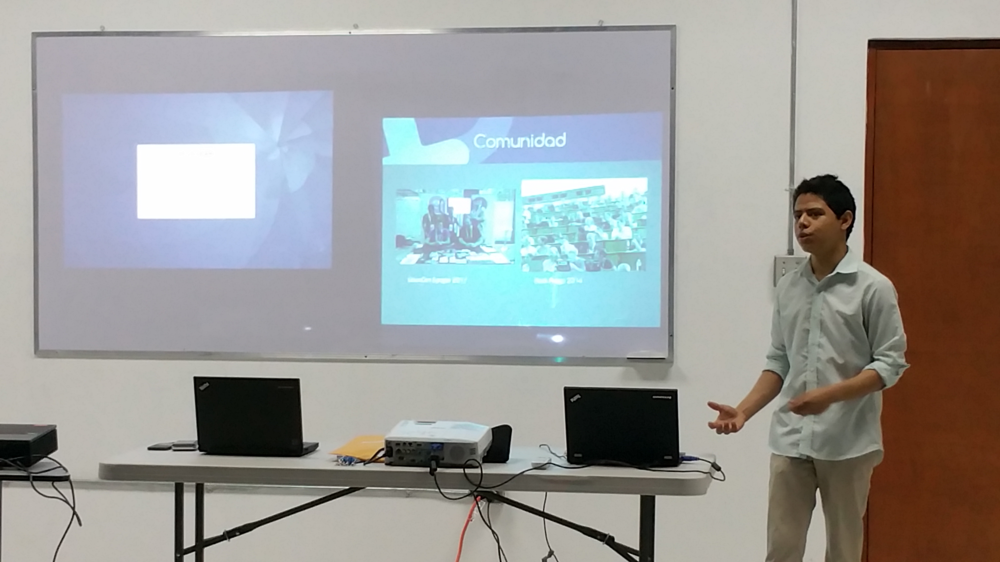
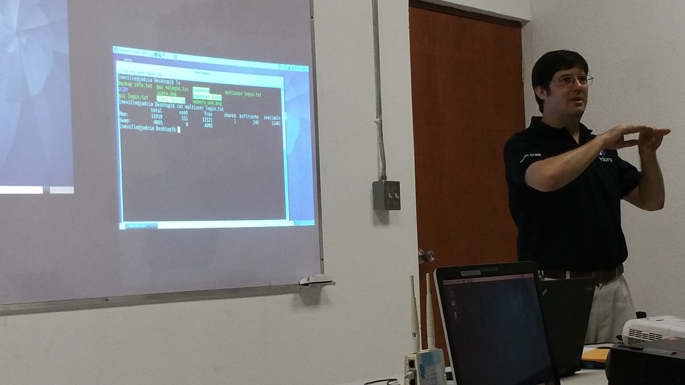
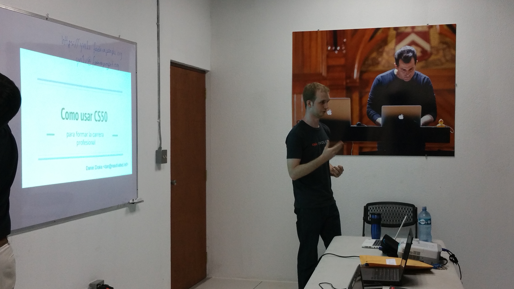
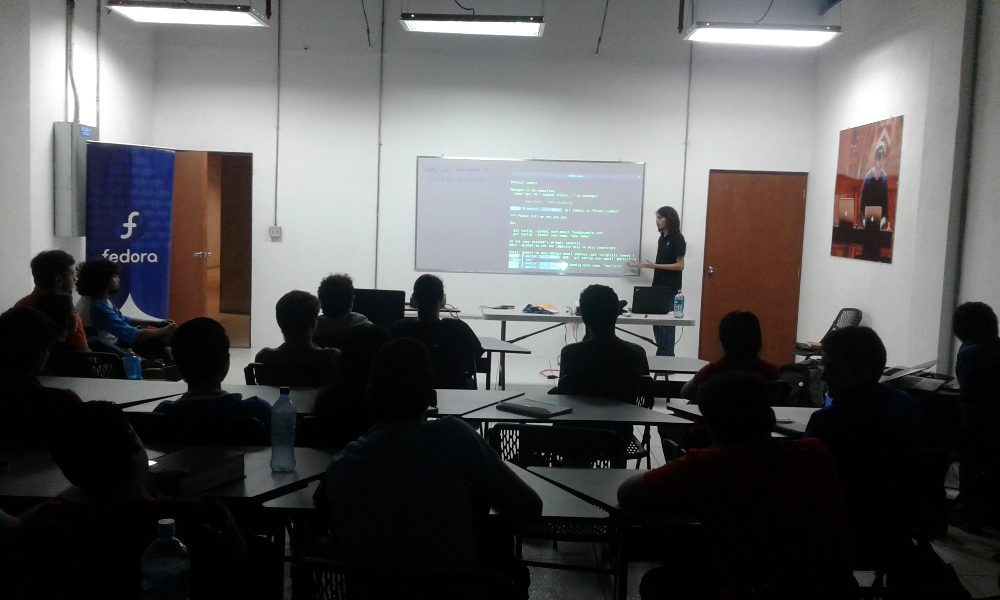

On Tuesday, March 14th, the Fedora Nicaragua community and the CS50x.ni staff, with the support of Fundación UNO and the Fedora Project, came together for a series of lectures. These sessions provided insights into using Free Software, emphasizing the importance and benefits of the various tools utilized in the CS50x.ni course. The lectures were open to current CS50x.ni participants, prospective students, and anyone interested in learning more about Free Software, particularly the Fedora Project.
The event took place in the basement of the north wing of the Rigoberto López Pérez building at the National University of Engineering's Simón Bolívar Campus, in classrooms designated for the CS50x.ni (Coding) project.
The talks started at 9:00 AM. The first presentation, "Fedora Project Overview", was facilitated by Eduardo Mayorga. Eduardo, a Fedora Project Ambassador, Package Maintainer, and participant in the CS50x.ni course, explained the Fedora Project's mission and vision as a Free Software initiative. He also shared his experience of being part of the Fedora community at both local and international levels.
The second talk was delivered by Neville Cross, Founder and Leader of the Fedora Community in Nicaragua. Neville highlighted the significance of mastering command-line tools included in all GNU/Linux distributions. He demonstrated the use of SSH remote management tools, showcasing how to manage resources remotely via command line, and discussed additional tools for system monitoring.
The third talk was facilitated by Daniel Drake, an operating system developer from the UK who has lived in Nicaragua for eight years. Daniel, known for his work on the One Laptop per Child project, presented "Employment Opportunities related to Linux after CS50". Drawing from over 15 years of experience, Daniel shared his journey as a Free Software contributor and developer, offering advice on joining projects like The GNOME Project and the Linux Kernel.
In the final block of talks, Porfirio Páiz, a Fedora Project contributor and CS50x.ni student, demonstrated Fedora's utility for CS50x.ni students. He gave three mini-presentations:
1. "Getting Started with Git": A workflow demo for version control. 2. "A Brief Introduction to Docker": How Docker simplifies programming environments for CS50x.ni participants. 3. "Setting Up a Development Workstation with Fedora": Tips on using Fedora to create an efficient development environment.
As a delightful conclusion, the Fedora Nicaragua team and CS50x.ni staff enjoyed a casual gathering with the audience, sharing ideas, experiences, cold drinks, and delicious pizza, generously sponsored by the Fedora Project.

The Fedora Project community is committed to continuing these sessions, offering valuable knowledge and inspiration for those entering the exciting world of programming through CS50x.ni.
Sorry for the late post. Here's a cheerful Hot Dog to brighten your day: